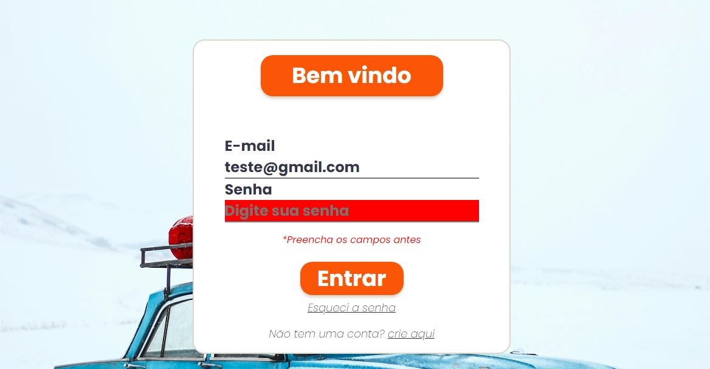

Welcome, guy!
I'm Mailson
Desenvolvedor front end jr, entusiasta de ciências e tecnologia. Estudo desenvolvimento web, cursando análise e desenvolvimento de sistemas. Busco oportunidades de crescer na área tech. as tecnologias que utilizo atualmente são: React, javascript, HTML, CSS, GIT e Figma
Projetos

Este projeto simples me ajudou a compreender melhor o funcionamento de uma API, o conceitos de javascript assincrono e o tratamento de erros. É um sistema simples que através de uma busca de um determinado CEP retorna na tela dados da região como: Estado, Cidade e Rua pertenvete ao CEP.
O projeto de login, assim como os demais projetos, foram desenvolvidos por mim próprio, para aplicar os conceitos que aprendia conforme estudava, de modo a exercitar meu pensamento quanto a resolução de problemas
Um app web que em que pode ser listadas tarefas, tornando o seu dia mais produtivo. Construir este app me ajudou a praticar conceitos de responsivdade, como medida queries e a ideia de mobile first. Além disso, também adicionei uma API que gera conselhos aleatórios, exercitando assim, os conceitos de fecth e await.